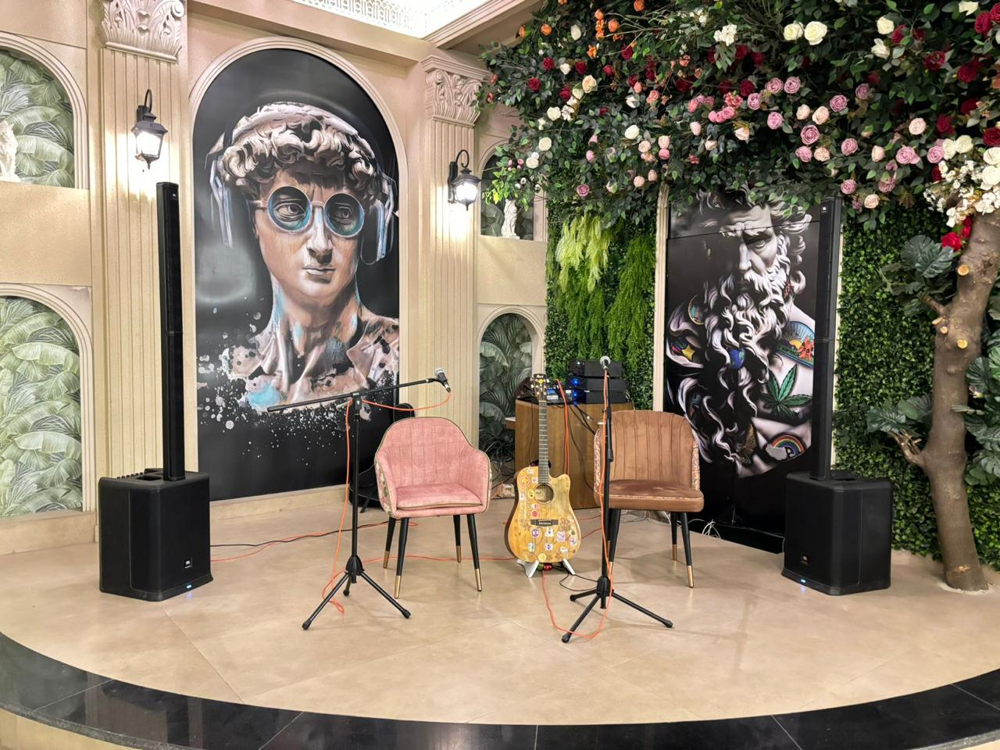
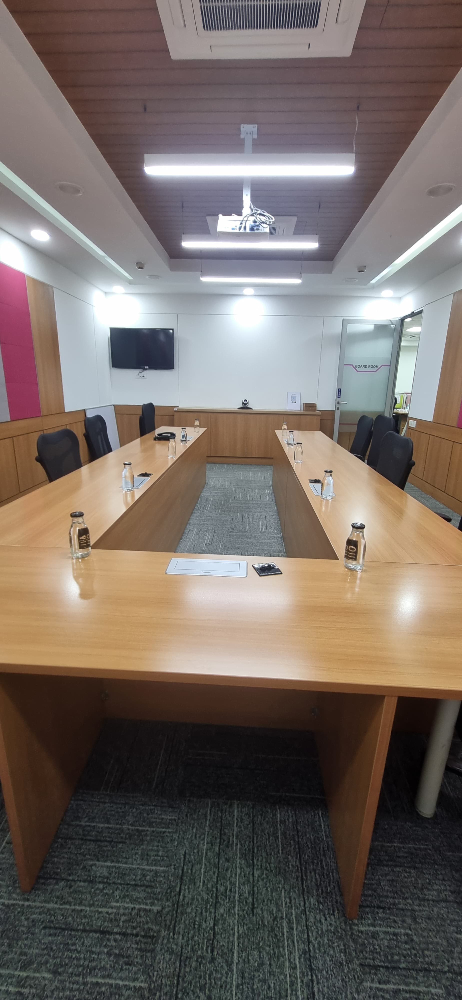
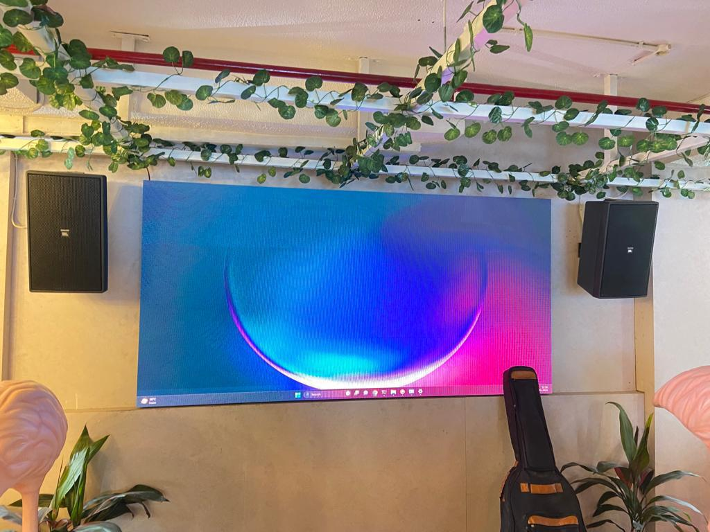
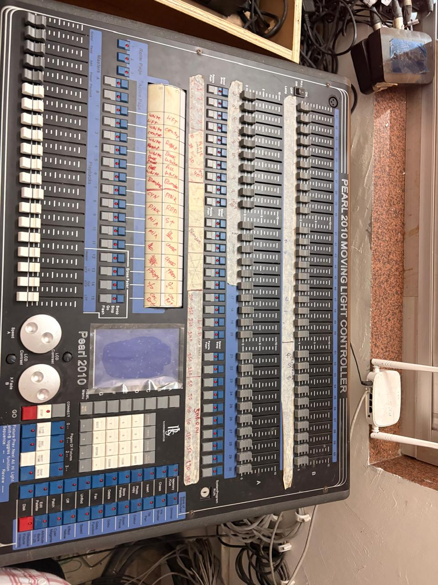

Microphone strategy
Ceiling, table, wireless, boundary and conferencing microphones selected around pickup radius, seating layout, user movement, background noise and acoustic risk.

Professional Audio System Integrator
GPSPL designs and integrates microphones, speakers, DSP processors, amplifiers, mixers, cabling, tuning and support for conference rooms, classrooms, seminar halls, auditoriums, hospitality spaces and public address systems.
Supply + Design + Integrate + Support
Professional audio design is a balance of speech clarity, even coverage, gain before feedback, microphone pickup, amplifier headroom, DSP routing, cable discipline, room tuning and support readiness.
 Luminous
LuminousCeiling, table, wireless, boundary and conferencing microphones selected around pickup radius, seating layout, user movement, background noise and acoustic risk.
Installed ceiling speakers, wall speakers, PA mains, delay speakers and fills planned around audience area, coverage angle, listener distance and required SPL.
DSP, mixers, AEC, matrix routing and amplifiers sized for channel count, headroom, echo control, gain structure, tuning and future expansion.
Testing, tuning, documentation, training, warranty coordination and preventive maintenance keep the sound system reliable after handover.
Audio Engineering Blueprint
A professional audio BOQ should not be a fixed quantity table. GPSPL evaluates the room, users, application, acoustics, mounting surface, cable pathway and operating workflow before finalizing the system direction.
Meeting rooms, classrooms, auditoriums and PA zones need comfortable speech level without harsh volume. GPSPL plans speaker coverage around listener distance, room size, ceiling height, background noise and expected speech level. The target is even intelligibility across the listening area, not simply loudness near the front row.
Ceiling speakers work well for distributed speech in meeting rooms and classrooms, while wall speakers, column speakers, subwoofers, PA mains, delay speakers or fills may be required for seminar halls, multipurpose rooms and auditoriums. Fewer higher-performance speakers may be better than many weak speakers if coverage remains uniform.
Microphone quantity depends on pickup pattern, seating layout, room dimensions, ceiling height and audience participation. A compact conference room may need one beamforming or table microphone solution. A seminar hall may need wireless handheld and lapel microphones for presenter and Q&A use. GPSPL avoids over-miking rooms where clean pickup can be achieved with fewer devices.
DSP is recommended when the system needs echo cancellation, multiple microphone inputs, speaker zones, gain control, audio routing, conferencing integration, presets or future expansion. For video conferencing rooms, AEC channel planning is important. For auditoriums, DSP can manage routing, EQ, limiting, feedback control and source distribution.
Amplifier power is selected after checking speaker load, sensitivity, impedance, cable run, required output and safe headroom. The goal is clean operation without clipping. Oversized amplification can waste budget, while undersized amplification can reduce clarity and reliability. GPSPL sizes amplifiers to match actual speaker demand and room use.
Audio performance depends on mounting height, aiming, cable termination, rack dressing, grounding, device configuration and commissioning. GPSPL includes testing, gain structure, EQ, level setting, basic acoustic validation, user training and documentation so the final system behaves predictably in daily operation.
Audio Scope
GPSPL can plan audio-only upgrades or complete AV integration. The scope may include microphones, speakers, DSP, amplifier, mixer, wireless systems, stage inputs, rack, UPS, cabling, tuning, training and AMC. Final selection depends on the room purpose, ceiling type, background noise, audience size, acoustic treatment, required music quality, conferencing platform and budget direction.
In a boardroom, clear far-end voice pickup may matter more than high music output. In a classroom, instructor voice, student questions and fatigue-free listening matter. In a seminar hall, presenter microphones, audience Q&A, stage monitoring and even seating coverage become important. In a hospitality or retail area, background music needs comfortable coverage without hotspots. GPSPL maps the audio requirement before recommending the product family.
Auditorium & Seminar Hall Guidance
Auditoriums and seminar halls are high-risk audio spaces because distance, reflections, stage use, ceiling height and audience coverage change the design. GPSPL studies the seating bowl, throw distance, audience width, balcony or rear rows, stage position, screen location, wall surfaces, ceiling height and expected program type before freezing speaker and microphone direction.
For speech-led auditoriums, the design priority is intelligibility. The system should deliver clear voice to the last row without making the front row uncomfortable. This may require PA mains, delay speakers, fill speakers, DSP delay alignment, limiter settings and controlled amplifier headroom. For multipurpose halls, the design may also include music playback, stage microphones, wireless microphone receivers, mixer inputs, recording output and operator-friendly control.
Microphone planning for an auditorium is different from a meeting room. Presenter lapel microphones, handheld microphones, podium microphones, panel microphones and audience Q&A microphones may all be considered, but only when the workflow requires them. GPSPL avoids adding channels just to make the BOQ look bigger. Each microphone should have a purpose, an input path, a gain structure, a mixing strategy and a practical user workflow.
Final auditorium audio pricing depends heavily on site realities: rigging points, cable path, rack location, stage box position, power availability, acoustic treatment, height access, working hours and commissioning time. A planning BOQ can provide a budget direction, but GPSPL validates exact quantities, models, labour and tuning effort after site review.
GPSPL designs auditorium and seminar hall systems around coverage, headroom, controlled feedback risk, microphone workflow, DSP configuration, installation quality, tuning and serviceable handover.
Plan Auditorium AudioAudio Project Gallery
These visuals are selected for practical audio use cases: stage sound, boardroom microphones, training-room voice reinforcement and retail or hospitality sound zones.





Why It Helps
GPSPL supports product shortlisting, procurement, installation planning, rack and cable work, DSP configuration, audio tuning, commissioning, user handover, warranty coordination and AMC readiness so technology purchase becomes a working sound solution.
Request Audio QuoteBuyer Guide
Professional audio systems are often judged only when they fail. If remote participants cannot hear clearly, if a teacher's voice becomes tiring, if the front row is too loud, if the last row cannot understand the presenter, if microphones feed back during Q&A or if the support team cannot identify cables inside the rack, the room feels unfinished. GPSPL plans the system before installation so these problems are reduced at design stage.
For conference-room audio, GPSPL checks microphone coverage, echo cancellation, speaker zones, camera and conferencing platform integration, table layout and room control. For classroom audio, the priority is instructor clarity, student participation, fatigue-free listening and simple daily use. For auditoriums and seminar halls, the priority becomes even SPL, throw distance, stage inputs, wireless microphone reliability, delay alignment, DSP routing and operator handover. For hospitality, retail and public address, the focus shifts to distributed coverage, background music quality, announcement clarity, zoning and maintenance access.
A strong audio BOQ should make the commercial logic understandable. Hardware, wiring, installation, programming, tuning, testing, training and AMC are different pieces of the project. GPSPL can provide a planning estimate first, then validate final brand, model, quantity, cabling and labour after site survey. This gives clients a practical budget range while still respecting real acoustic and installation conditions.
Value Engineering
Audio systems can become expensive when the BOQ is built from assumptions instead of engineering checks. One common mistake is adding more speakers when the real issue is coverage angle, speaker aiming or amplifier headroom. Another is adding more microphones when the real issue is room acoustics, pickup pattern or table layout. GPSPL reviews these points before recommending equipment so the client pays for useful performance, not unnecessary quantity.
For small meeting rooms, a compact conferencing audio device may deliver better value than a full DSP rack if the room is quiet, the table is short and the workflow is simple. For a larger boardroom, DSP, table or ceiling microphones and distributed speakers may be justified because echo cancellation, pickup control and reliable far-end audio matter. For auditoriums, a lower-cost speaker may not be the best value if it cannot provide throw distance, headroom or controlled coverage. Value engineering means choosing the lowest practical system that meets the technical requirement, not always the cheapest item.
GPSPL also separates the hidden cost items that buyers often miss: cable routing, connectors, rack dressing, wireless frequency coordination, microphone receiver placement, DSP programming, audio tuning, testing, training and support documentation. These services affect the final experience as much as the hardware. A properly commissioned audio system should be understandable for users and maintainable for IT, facility or operations teams after handover.
During commissioning, GPSPL checks practical listening positions, microphone gain, speaker level balance, feedback margins, input naming, preset behaviour and user handover. These checks are important because a system that sounds good during installation can still fail during a real event if presenter movement, audience questions, laptop audio, wireless microphone handling or operator workflow was not considered. The final design therefore includes both technical performance and day-to-day usability.
GPSPL reviews room size, audience distance, acoustic risk, speaker coverage, microphone workflow, DSP channel count, amplifier load, cabling and support needs before freezing the final audio BOQ.
Get Audio Design ReviewSearch Intent Coverage
A buyer may search for pro audio solution provider, pro audio video solution, PA system installation, conference room audio, auditorium sound system, classroom speaker system or microphone solution provider. These searches may sound different, but most of them need the same professional review: speech clarity, microphone pickup, speaker coverage, DSP processing, amplifier headroom, cabling, tuning, installation quality and support.
GPSPL keeps the page useful for both non-technical buyers and AV consultants. A first-time buyer can understand what is included in an audio solution, while a technical evaluator can look for DSP, AEC, amplifier sizing, SPL coverage, speaker placement, tuning, commissioning and AMC readiness.
Audio FAQ
Speaker quantity is calculated from audience area, coverage angle, listener distance, ceiling height, required speech level, speaker sensitivity, acoustic overlap and room reflections. GPSPL prefers the minimum number of suitable speakers that can cover the space professionally.
Ceiling microphones suit clean tables and wider pickup zones when ceiling conditions are workable. Table microphones can be better for fixed boardroom seating and direct pickup. Wireless microphones suit presenters, flexible halls and Q&A. Final choice depends on layout, ceiling, acoustics and user workflow.
DSP is required when the room needs echo cancellation, multiple microphones, conferencing audio, routed speaker zones, gain control, EQ, feedback management, presets, room combining or future audio expansion.
Auditorium sound depends on seating depth, ceiling height, stage position, acoustic surfaces, rigging, cable route, rack location, power and commissioning access. These cannot be accurately finalized from seat count alone.
Yes. GPSPL supports device configuration, gain structure, routing, EQ, level setting, basic acoustic validation, testing, user training, documentation, warranty coordination and AMC readiness.
RFQ Checklist
Share these details and GPSPL can recommend the right brand, model family, accessories, installation scope and support plan.
Room dimensions and ceiling height
Audience and seating layout
Speech, music or conferencing use
Existing audio equipment
Microphone preference
Support and AMC requirement
Comparison Guide
Choose the optimal audio capture strategy for voice clarity and meeting-room aesthetics.
| Parameter | Ceiling Microphone Array | Tabletop Microphones |
|---|---|---|
| Table Aesthetics | 100% clean, cable-free tabletop layouts. No clutter. | Requires surface cables, wire conduits, and visible units on tables. |
| Coverage & Tracking | Auto voice-tracking beamforming. Captures speaker anywhere in room. | Fixed pickup radius. Speaker must remain close to the microphone. |
| Background Noise | Advanced DSP filters room reflection, AC rumble, and table taps. | Prone to picking up paper rustling, laptop typing, and table tapping. |
| Ideal Environment | Executive boardrooms, flexible multi-purpose rooms, large training spaces. | Huddle rooms, small meeting spaces with static, defined seating. |
Buying Guidance
Avoid these frequent pitfalls when planning, sourcing, and installing enterprise technology systems.
Sourcing low-wattage amplifiers that clip under peak volume, destroying speaker voice coils.
Skipping Acoustic Echo Cancellation (AEC) reference loop calibration in DSP, leading to participant echoes during VC calls.
Sourcing omnidirectional boundary microphones in large, echoing training halls or auditoriums.
Running audio cables next to high-voltage power conduits, creating permanent low-frequency hums.
Target Sectors
GPSPL delivers integrated technology across multiple business and educational verticals.
Get a Faster Quote
To help GPSPL engineers recommend the right product models and prepare a precise site-survey-backed BOQ, please share the following details when contacting us: